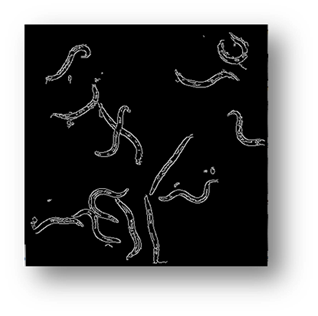
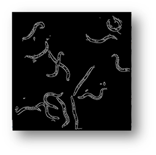

The Cell Classifier
Abstract: (Click to View Original Proposal)
Identifying and counting cells in images is the first stage of cell analysis, but this step can become extraordinarily time consuming if done manually as the number of cells and organisms increase. Our goal was to take a micrograph, a magnified image containing cells taken through a microscope lens, and return information about cell type and number. For this we implemented two models. In our first model we trained a high level image classifier followed by class specific detection algorithms and finally evaluated the metrics. Our second approach involves a generic cell detector, followed by classification. We have compared the performance of both these models in terms of precision, recall and mean RMS cell-count error. We used two data-sets: C.elegans and Human Bone Osteosarcoma Epithelial Cells (U2OS Line), that provide ground truth segmentation of cells.

Introduction
Data Sets
Figure1: Approach 1
Figure2: Approach 2
Classifier
C-Elegans Detector [Approach1]
Figure3: input image
Figure4: input image example where the C. Elegans blend into the background
Figure5: background subtracted image

Figure6: image processed using canny edge detection
Figure7(a,b,c): showing the process of removing the borders
 
Figure8(a,b,c): showing the results of filtering the small components out of the image
Figure9: the results of using the external contour connection based on distance method
Figure10(a,b): showing the process and result of masking for counting pixels for cell number estimation
Figure11: the final result with bounding boxes
Human U2OS Detector [Approach1]

Figure12
Figure13(a,b,c)
Shows the advantage of using an iterative thresholding approach. (a) shows a low threshold value and it does not separate all of the cells. (b) shows a high threshold value and it misses some cells and thinks other cells are smaller than they really are. (c) shows an iterative approach starting from the lower threshold value in (a) and moving to the value in (c) and evaluates at each step to see if the segmentation is better. Additional segmentations between (a) and (c) are shown in yellow in (c).
Figure14(a,b,c,d,e)
Segmented images displaying the results of circle detection segmentations shown in yellow. (b) shows a successful segmentation of the cell shown in (a) that could not be separated by the connected components technique. (d) shows the method successfully implemented on (c) while (e) is a failure case of the circle detection method for cell separation.
Figure15(a,b)
Generic Detector [Approach2]
Results
Figure16
Figure17
Figure18
Figure19
Figure20
Figure21

Figure22(a,b)
Figure23
Figure24
Figure25
Figure26

Figure27(a,b)
Figure28a
Figure28b
Figure29
Conclusions
Qualitative Results

Figure30